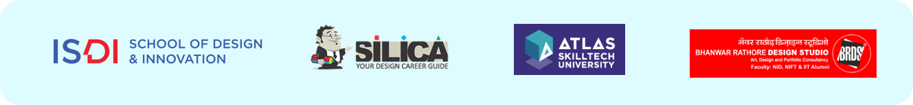
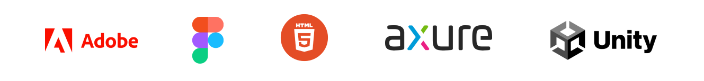

Know more about me!
Education
University Of Michigan
Master Of Science in Information Science - UX & Human-Computer Interaction (Class of 2024)
ISDI- School Of Design & Innovation
Bachelor in Communication Design (Class of April 2021)
- -Student Advisor & Early Career Coach (Jan 22- Present) -Recipient of first honour lost of ATLAS Legacy Award for Outstanding Achievement (Mar 22)
- -ATLAS 25 Under 25 Award (First honour list, Oct 21) -ISDI Outstanding Student Award (May 21)
- -ISDI INFERNO - Advisor (2020- Present)
- -Chairperson & Founder ISDI INFERNO Intercollegiate Creative Media, Arts, Film & Design Festival
(2019-20) -ISDI Student Council- President (2019-20)
- -Recipient of Spirit Of ISDI Award (June 20)
University Of Mumbai
Bachelor in Arts -Sociology & Education (Class of April 2021)
Work Experience
Mondelēz International, India
No code low code & Innovation Specialist • Jun 2021 - July 2022
- • Spearheaded the UX & visuals for over 75 use cases with a cross- disciplinary team to balance user needs & business concerns leading to a 20% increase in consumer satisfaction
- • Solely project managed the UX along with mentoring 10 interns, project follow-ups, and work allotment of the design intern team.
- • Collaborated on strategy projects in the areas of emerging technology digital transformation while working directly along with the VP for Mondelez Digital Services & Global Digital Innovations & Regional Business leads.
- • 3 times Mondelez Bravo performance awardee
- UI/UX Design Consultant • Mar 2020 - May 2021
- • Ideate, Develop end-to-end user experience and user flows with high- fidelity prototypes and mock-ups for concept validation.
- • As their first design hiree established and set up a culture of UX & visual design on the No Code/Low Code team.
University Of Hamburg, Germany
User Experience Consultant • Jan 2022 to Feb 2022
• Enhancing end-to-end experiences from onboarding to last-mile customer service for their Legal Priority Projects website.
Invited Talks & Panelist at
Tools
